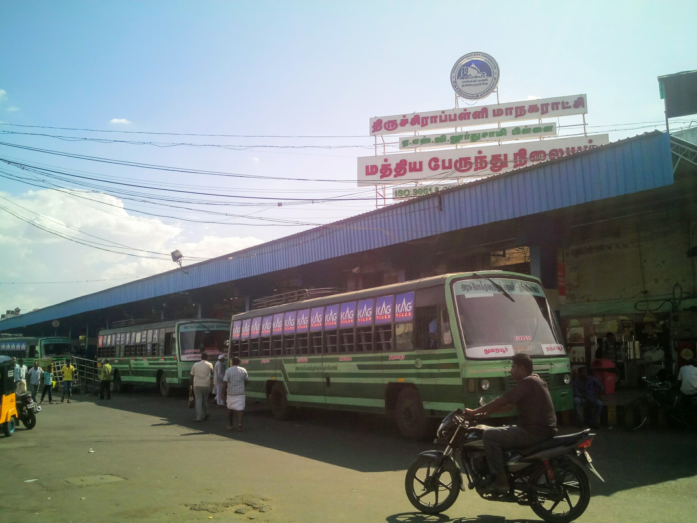

Tiruchirappalli,also called Tiruchi or Trichy, is a major tier II city in the Indian state of Tamil Nadu
and the administrative headquarters of Tiruchirappalli district. The city is credited with being the best livable city,
the cleanest city of Tamil Nadu, as well as the fifth safest city for women in India.It is the fourth largest city as
well as the fourth largest urban agglomeration in the state. Located 322 kilometres (200 mi) south of Chennai and 374
kilometres (232 mi) north of Kanyakumari, Tiruchirappalli sits almost at the geographic centre of Tamil Nadu state.
The Cauvery Delta begins 16 kilometres (9.9 mi) west of the city where the Kaveri river splits into two, forming the
island of Srirangam which is now incorporated into the Tiruchirappalli City Municipal Corporation. The city occupies
an area of 167.23 square kilometres (64.57 sq mi) and had a population of 916,857 in 2011.
Tiruchirappalli's recorded history begins in the 3rd century BC, when it was under the rule of the Cholas. The city has also
been ruled by the Mutharaiyars, Pallavas, Pandyas, Vijayanagar Empire, Nayak Dynasty, the Carnatic state and the British. The
most prominent historical monuments in Tiruchirappalli include the Rockfort at Teppakulam, the Ranganathaswamy temple at
Srirangam dedicated to the reclining form of Hindu God Vishnu, and is also the largest functioning temple in the world, and
the Jambukeswarar temple at Thiruvanaikaval, which is also the largest temple for the Hindu God Shiva in the world. The
archaeologically important town of Uraiyur, capital of the Early Cholas, is now a neighbourhood in Tiruchirappalli.
The city played a critical role in the Carnatic Wars (1746–1763) between the British and the French East India companies.
The city is an important educational centre in the state of Tamil Nadu, and houses nationally
recognized institutions such as National Institute of Technology (NIT), Indian Institute of Management (IIM), Indian
Institute of Information Technology (IIIT) and National Law University (NLU). Industrial units such as Bharat Heavy E
lectricals Limited (BHEL), Golden Rock Railway Workshop, Ordnance Factory Tiruchirappalli (OFT) and High Energy Projectile
Factory (HEPF) have their factories in the city. The presence of a large number of energy equipment manufacturing units in
and around the city has earned it the title of "Energy Equipment and Fabrication Capital of India". Tiruchirappalli is
internationally known for a brand of cheroot known as the Trichinopoly cigar, which was exported in large quantities to
the United Kingdom during the 19th century.
A major road and railway hub in the state, the city is served by the Tiruchirappalli International Airport (TRZ) which
operates flights to the Middle East and Southeast Asia.
Etymology:
Historically, Tiruchirappalli was commonly referred to in English as "Trichinopoly". The shortened forms "Trichy" or
"Tiruchi" are used in everyday speech and the full name Tiruchirapalli appears in official use by government and quasi-government
offices but seldom used by the general public.
According to the late scholar C. P. Brown, Tiruchirappalli might be a derivative of the word Chiruta-palli (lit. "little town")
. Orientalists Henry Yule and Arthur Coke Burnell have speculated that the name may derive from a rock inscription carved
in the 16th century in which Tiruchirappalli is written as Tiru-ssila-palli, meaning "holy-rock-town" in Tamil.Other
scholars have suggested that the name Tiruchirappalli is a rewording of Tiru-chinna-palli, meaning "holy little town". The
Madras Glossary gives the root as Tiruććināppalli or the "holy (tiru) village (palli) of the shina (Cissampelos pareira)
plant".
According to Hindu mythology, Tiruchirappalli derives its name from the three-headed demon Trishira, who meditated on the Hindu god
Shiva near the present-day city to obtain favours from the god.An alternative derivation, albeit not universally accepted,
is that the source of the city's name is the Sanskrit word "Trishirapuram"—Trishira, meaning "three-headed", and palli or puram meaning
"city".
The Most Famous Places In Trichy:
Trichy Rockfort(Malaikottai),
Mary Lourdes Church,
Sri Rangam(Renganatha Swamy Temple),
Samayapuram Mariamman Temple,
Jambukusuvarar(Thiruvanaikaval)Temple.
The more details are below,
1) Trichy Rockfort(Malaikottai):
Tiruchirappalli Rockfort, locally known as Malaikottai, is a historic fortification and temple complex built on an ancient rock.
It is located in the city of Tiruchirappalli, on the banks of river Kaveri, Tamil Nadu, India. It is constructed on an 83 metres
(272 ft) high rock.There are two Hindu temples inside, the Ucchi Pillayar Temple, Rockfort and the Thayumanaswami Temple,
Rockfort. Other local tourist attractions include the famous Pallava-era Ganesha temple and the Madurai Nayak-era fort. The fort
complex has witnessed fierce battles between the Madurai Nayakas and Adil Shahi dynasty of Bijapur, Carnatic region and Maratha
Imperial forces. The fort played an important part during the Carnatic Wars, helping lay the foundations of the British Empire in
India. The Rockfort is the most prominent landmark of the city.The rock is said to be one of the oldest formations in the world.
It is 3.8 billion years old, making it as old as the rocks in Greenland and older than the Himalayas. Quartz, used in glass making,
and feldspar, used in ceramics, are found in this rock formation.
The Pallavas initially built this temple, but the Nayaks made use of its naturally fortified position and designed it again.
It is a long climb up the 344 steps cut into the stone to the top.
Temples:
There are five temples on the rock fort:
the Lalitankura Pallavesvara Griham, also called the Upper Cave,
the Lower Cave,
the Manikka Vinayakar temple at the foot of the hill, dedicated to Lord Ganesha,
the Ucchi Pillayar Temple at the top of the hill, dedicated to Lord Ganesha
the Thayumanaswami Temple, Rockfort, literally "the lord who became the mother",is a large 18th-century temple.
It is dedicated to Shiva, goddess Amman, and there is a shrine for the 18th-century Nayaka-era saint, Tayumanavar.
It is on the way, as one climbs the steps to Ucchi Pillayar Temple.
2) Mary Lourdes Church:
The Our Lady of Lourdes Church is located in the city of Tiruchirapalli in the state of Tamil Nadu, India. Built in the Gallo-Catholic design,
the Church is devoted to Our Lady of Lourdes.[1] The church is considered one of oldest of the 22 churches in the city which are older than 100
years.[2] The church is located in the premises of St. Joseph's College Higher Secondary School, Trichy. The church is one of the major landmarks in the city.
The foundation was laid during 1895 and the construction completed by 1903 when it was thrown open to public. The images of St. Ignatius, St.
Francis Xavier, Sacred Heart of Jesus, St. Peter, and St. John de Britto on the middle of the spire is the most notable feature of the church.
The renovated church was dedicated on 10 February 1998 and the Way of cross was blessed and erected during 1999. The church presents a case study
of a Gothic style church built fully with indigenous material and craftsmen.
Our Lady of Angels Church is a working church with hourly prayer and daily services and follows Roman Catholic sect of Christianity. The church has
various religious practices from 5:15 am to 8 pm. There are four annual feasts in the church with the feast of Our Lady of Lourdes held annually on
11 February being the most prominent among them. The church is associated with the Roman Catholic Diocese of Tiruchirapalli, while it is maintained
and administered by the Fathers of Society of Jesus (The Jesuits).
3)Trichy-Natharsa Mass:
Baba Natharvali has occupied a unique position in the ranks of the Islamic saints of the world. He was named as Muthaharudeen at first. He was in
Hijiri 347 in one of the idle Eastern countries. Even though he was the sultan, he was having no attachment to pleasures of royal life of pomp and
splendor right from his early age. He descendedfrom his throne crowing his brother, Syed Jalaudeen and undertook holy pilgrimage for propagation
of Allah’s glory according to Islamic tenets.
Nadirshah Mosque is a mosque situated in the city of Tiruchirappalli in the state of Tamil Nadu, India. It is situated in the western part of the
city close to the Tiruchirappalli Fort Railway Station. It was built by rulers of the Carnatic Sultanate. The mosque is believed to contain the remains
of the Nawab Muhammad Ali Khan Wallajah of the Carnatic and the headless body of the general Chanda Sahib who was beheaded by the Maratha king of the
Thanjavur Maratha kingdom, Pratap Singh. The mosque gets its name from the tomb of the Muslim cleric Babayya Nadir Shah whose tomb lies within its precincts.
During this time, he had wrought a lot of miracles to the astonishment of the people, who came into contact with him. This a part with his 900
kalandars, he set foot in Tiruchirapuram, which s now known as Tiruchirappalli. He led a pious saintly life with his kalandars in a flower garden
in Tiruchirappalli.Saint Baba Natharvali’s body was laid to rest in a place where it was once a Easwaran temple in a room. Constructed with four
doors according to Vedic sastras and seppulingam is a witness to ghee lamp burning near the grave of Baba.The saint breathed his last on the 15th
of the month of Ramzan in Hijiri 417 and with a view to remember this day, the first 17days in the month of Ramzan every year kanduri Urs is
celebrated in a highly grand scale it is a unique feature to see Muslims, Hindus and Christians assemble to pay their homage and warm respects
to Baba Natharvali on the eve of the kanduri festival and seek his graceful blessings.
4) Sri Rangam(Renganatha Swamy Temple):
Srirangam (Tamil: ஸ்ரீரங்கம்) is a neighbourhood in the city of Tiruchirappalli in the Indian state of Tamil Nadu. A river island, Srirangam is bounded
by the Kaveri River on one side and its distributary Kollidam on the other side. Considered as the first among the 108 Divya Desams, a group of Vishnu
temples, it is famous for the Sri Ranganathaswamy Temple, the largest temple complex in India and the biggest functioning Hindu temple in the world.
Srirangam is also home to a significant population of Sri Vaishnavas (followers of Vishnu).
Srirangam is famous for its Sri Ranganathaswamy Temple, a major pilgrimage destination for Hindus (especially Sri Vaishnavas) and the largest temple complex in India.
According to the UNESCO, Srirangam is considered the biggest functioning Hindu temple in the world,[2] as it covers an area of about 631,000 square metres (6,790,000 sq ft)
with a perimeter of 4 km (10,710 ft),[3] Angkor Wat which is also dedicated to Vishnu is even bigger but services do not take place anymore in the temple.
Srirangam is one of a few self-manifested shrines (Svayam Vyakta Kshetras) of Vishnu. The temple complex spans 156 acres (0.63 km2). It has seven
prakaras (enclosures). These enclosures are formed by tall, thick rampart walls running around the sanctum. There are 21 towers, gopurams, in all
prakaras decreasing in height inwards. The temple town lies on an islet formed by the rivers Kaveri and Kollidam.The southern gopuram of the temple,
called the Rajagopuram, is 239.5 feet tall and, as of 2016, is the tallest in Asia. The construction of the Rajagopuram began during the reign of
Achyuta Deva Raya of the Vijayanagara empire. However, construction was halted after his death and the structure of the Rajagopuram remained
incomplete for over 400 years. The completion of the Rajagopuram was undertaken and completed successfully by Sri Vedanta Desika Yatheendra
Mahadesikan, the 44th jeeyar of Sri Ahobila Matha. The construction spanned 8 years before it was consecrated on 25 March 1987.
5)Mariamman Temple,Samayapuram:
Arulmigu Sri Mariamman Temple, Samayapuram is an ancient Hindu temple in Tiruchirappalli in Tamil Nadu, India. The main deity, Samayapurathal or
Mariamman, a form of supreme mother goddess Durga or Maha Kali or Aadi Shakthi, is made of sand, clay with extractions of herbs unlike many of the
traditional Mariamman deities is considered as most powerful Goddess, and hence unlike many other Hindu deities there are no abhishekams (sacred
bathing) conducted to the main deity, but instead the "abishekam" is done to the small stone statue in front of it.
It is believed by the devotees that the Goddess has enormous powers over curing illnesses[1] and hence, it is a ritual to buy small metallic replicas,
made with silver or steel, of various body parts that need to be cured, and these are deposited in the donation box.[citation needed]
Devotees also offer mavilakku (Tamil - மாவிளக்கு), a sweet dish made of jaggery, rice flour and ghee.[2] Offerings of raw salt is also made to the
Goddess by the rural devotees.The temple attracts thousands of devotees on Sundays, Tuesdays and Fridays, the holy days for Mariamman. Samayapuram
is the second most wealthy (in terms of cash flows) temple in Tamil Nadu after Palani.
The legacy of Samayapuram is well spread beyond Tamil Nadu and even after centuries of emigrating from India, many people in Sri Lanka, Singapore,
South Africa and Fiji still maintain their loyalties to the temple and try to create similar temples and environment in their new country, raising
both a cause of concern and an appreciation of diversity.There is also a Samayapuram Mariamman Temple in Tanjong Rambutan at Malaysia.There is also
a shrine for Goddess Sri Samayapuram Mariamman at the Sri Veeramuthu Muneeswarar Temple which is located at Yishun Industrial Park and
Veeramakaliamman Temple, Serangoon Road, Singapore. During the month of Aadi,the annual Kozh Valarpu festival is conducted with much grandeur
by the Sri Samayapuram Mariamman Pillaigal at Jurong West,Singapore. An annual Samayapuram Sri Mariamman puja takes place at Jurong West Street
71, prior to the annual fire walking festival by Anbalahan and Family
6)Jambukusuvarar(Thiruvanaikaval)Temple:
Jambukeswarar Temple, Thiruvanaikaval (also Thiruvanaikal, Jambukeswaram) is a famous Shiva temple in Tiruchirapalli (Trichy) district,
in the state of Tamil Nadu, India. Though it is that Kocengannan (Kochengat Cholan), one of the Early Cholas, have built this temple.
Thiruvanaikal is one of the five major Shiva Temples of Tamil Nadu (Pancha Bhoota Stalam) representing the Mahābhūta or five great elements;
this temple represents the element of water, or neer in Tamil. The sanctum of Jambukeswara has an underground water stream and in spite
of pumping water out, it is always filled with water.
It is one of the 275 Paadal Petra Sthalams, where all the four most revered Nayanars (Saivite Saints) have sung glories of the deity in this
temple. The temple has inscriptions from the Chola period. The massive outer wall covering the fifth precinct, known as the Vibudi Prakara,
stretches over a mile and is two feet thick and over 25 feet high. Legend maintains that the wall was built by Shiva working with the laborers.
The fourth precinct contains a hall with 796 pillars and measures 2436 feet by 1493. It also has a small tank fed by perpetual springs.
The third enclosure is 745 feet by 197 surrounded a wall 30 feet high. This area has two gopurams (gateway towers) 73 and 100 feet tall, a coconut
thoppu and a small water tank.[8] The second enclosure is 306 feet by 197, a gopuram 65 feet high and several small shrines.[8] The inner most
enclosure measuring 126 feet by 123 has the sanctum.
In the third enclosure, there is a coconut grove having a small tank where the processional idol of the neighbouring Sriranganathaswamy Temple was
used to be brought one day a year. As the goddess Akhilandeshwari worshipped her husband Lord Shiva in this temple, even today at noon the
'Archakar' (chief priest) dresses like a female and does puja to Jambukeswara and Cow.[1] The noon pooja is very famous and a host of pilgrims
attend it every day. A special variety of black cow, called Karum Pasu is used for the occasion. Annabhishekam to lingam (ablution with cooked
rice) is a daily ritual performed in the temple. The temple is one of the hosts for the annual Natyanjali, a festival of classical Indian dance.
The temple has also a school for training nadhaswaram, a classical pipe instrument in Tamil Nadu.here is a legend that Parvati as Akhilandeshwari worshipped Shiva here and installed the idol in the sanctum. Following the legend, a priest performs the pooja every day. It is believed that the saint Adi Shankara offered ear rings with a Sri Yantra carving on it to goddess Akhilandeshwari. There are a total of nine waterbodies associated with the temple.[17]
map
Trichy In TN Map:
Tiruchirappalli is situated in central south-eastern India, almost at the geographic centre of the state of Tamil Nadu.
The Cauvery Delta begins to form 16 kilometres (9.9 mi) west of the city where the river divides into two streams—the Kaveri
and the Kollidam—to form the island of Srirangam.[71][86][87] By road it is 912 kilometres (567 mi) south of Hyderabad, 322 kilometres
(200 mi) south-west of Chennai and 331 kilometres (206 mi) south-east of Bangalore.[88] The topology of Tiruchirappalli is almost flat
with an average elevation of 81 metres (266 ft). A few isolated hillocks rise above the surface,[89] the highest of which is the Rockfort;
its estimated age of 3,800 million years makes it one of the oldest rocks in the world.Other prominent hillocks include
the Golden Rock, Khajamalai,and one each at Uyyakondan Thirumalai and Thiruverumbur.
Apart from Kaveri and its tributary Kollidam,the city is also drained by the Uyyakondan Channel,
Koraiyar and Kudamurutti river channels.The land immediately surrounding the Kaveri River—which crosses
Tiruchirappalli from west to east—consists of deposits of fertile alluvial soil on which crops such as finger millet and
maize are cultivated.Further south, the surface is covered by poor-quality black soil.A belt of Cretaceous rock known as the
Trichinopoly Group runs to the north-east of the city,and to the south-east there are layers of archaean rocks, granite and gneiss
covered by a thin bed of conglomeratic laterite.The region falls under Seismic Zone III, which is moderately vulnerable to earthquake.
Tiruchirappalli central Bus station:

Central Bus Station, popularly known as Central Bus Stand, is one of the bus termini of Trichy, located near Cantonment, the other being the
Chatram Bus Stand. The terminus spread over an area of 4.5 acres (1.8 ha) is managed by the Department of Transport (Tamil Nadu). Being a major
transit point in the central region of the state,[1] it experiences heavy traffic of about 2,200 buses daily. These buses serve about one lakh
(100,000) passengers every day.
Due to the strategic location of the terminus within the city and the city within the state, it is quite often to witness heavy traffic particularly
during festivals.[11][12] Ever since during the 1990s a proposal for a new integrated bus stand was mooted under the scheme of Integrated Urban Development
Programme, small and medium towns (Municipalities and Town Panchayats). Initially about 244.28 acres (98.86 ha) at Panjappur, near NH 45B was identified
, but was dropped citing as flood prone area. Yet the 100 acres (40 ha) defence land at Mannarpuram was favoured due to its proximity to Tiruchirappalli Junction and within the
centre of city, but slow response from Ministry of Defence keeps the issue lingering.The fate were same for the site at Ramji Nagar, near NH 45
and Kottapattu, near NH 210. The committee which was constituted by the court in 2006 to find an amicable and consensual decision, composed of officials
from Revenue, Town and Country Planning, Corporation, Tamil Nadu Pollution Control Board and the Public Works Department, started the process afresh
during mid-2011.
Tiruchirappalli International Airport:
Tiruchirappalli International Airport (IATA: TRZ, ICAO: VOTR) is an international airport serving Tiruchirappalli in the Indian state of Tamil Nadu.
The airport, spread over an area of 702.02 acres (284.10 ha), is located on National Highway 336, about 5 km (3.1 mi) south of the city centre.[4] As
of 2022, it is 31st busiest airport in India for passengers handled and 11th busiest for total international aircraft movement. It is the third busiest
airport within Tamil Nadu in terms of total passenger traffic, after Chennai and Coimbatore.The airport handled by Airports Authority of India is served
by two Indian and four foreign carriers providing direct connectivity to five domestic and nine international destinations. The airport is ISO 9001:2008
quality certified and was declared as an international airport in October 2012.
Currently, the Air Traffic Control (ATC) is handled from the old terminal building. The AAI along with the new terminal project has proposed to
construct a new Technical Block cum Air Traffic Control Tower at the airport, along with a new terminal,[38] The initial proposal was to construct
a 42.5 meters tall tower, which is now under proposal to be increased to 75 meters height,[39] and it finalised to be 46 meters tall, including the
top antenna. Tenders for the construction of the new ATC tower and technical block was floated at an cost of 92 crores in July 2022, and is expected
to be completed by June 2023.
Tiruchirappalli Junction:
Tiruchchirappalli Junction railway station, also known as Trichy Junction railway station (station code: TPJ) is a junction station in Tiruchirappalli,
Tamil Nadu. It serves as the headquarters for Tiruchirappalli railway division of the Southern Railway zone. The station code is TPJ, used for official
purposes. Daily approximately 15,000 passengers are using this Tiruchirappalli Junction. TPJ is the only railway station in southern railway to host
diesel–electric multiple unit (DEMU) shed. Tiruchirappalli Junction is the second largest railway station in Tamil Nadu and one of the busiest railway
stations in India. The station was awarded ‘Gold’ (72 points) rating in March 2020 by the Confederation of Indian Industries (CII) for implementing various
environment-friendly measures. It is the first and only station in Southern Railway to get "Gold" certification and fifth across Indian Railways.
It has been awarded 5 stars for electricity conservation. Golden Rock Railway Workshop and Diesel Loco Shed were involved in maintaining the bogies and
locomotives respectively for passenger and freight operations. The station is also equipped with free Wi-Fi,retiring rooms and AC lounge for
passengers at 1st platform. The construction of new platform no.8 is on fastrack to reduce the waiting of trains. There is Frequent Passenger Trains
towards Karur, Erode, Thanjavur, Karaikudi, Virudhachalam and Dindigul.